[Java] 57. EclipseでSpring bootを設定する方法
こんにちは。明月です。
この投稿はEclipseでSpring bootを設定する方法に関する説明です。
最近、私が色々のイッシューでフレームワークをSpring Web frameworkからSpring bootに乗り換えました。Spring bootが楽だというのは以前から知ってましたが。。
個人的に何かが自動に設定されることを好きではありません。
理由は様々がありますが、その中で問題が発生する時に。。何処でエラーが発生したか明確に分かりにくいことが一番の理由ですね。そのため、私は一からすべてを設定して作成することを好きです。(「プログラムは自動に処理することは絶対ない! 何処かで処理するはずだ」という傾向です。つまり、バグも何処かで間違って処理したので発生するはずだと思いです。)
でも、一つ一つ設定して作成することが利点だけあることではありません。生産性が悪いし設定することが多すぎるので管理が大変になることが大問題ですね。それで安定性が100%に確保してないライブラリは使わないです。特にオプーンライブラリ。。(昔の人。。おじちゃん。。(笑))
私も生産性も凄く重要だと思います。でもバグが発生して、そのバグを把握することが大変だし、回避が難しいなら。使わない方が良いと思って今までSpring bootを使わなかったんですね。
でも、最近個人イッシューで。。Spring boot frameworkを主に使った人が以前より増えたし、逆にWeb frameworkを使う人が少なくなって。。プロジェクトを一人でやることでもないし。。
一人でSpring bootを使わないということもできないので、Spring bootを使うことにしました。
でも。。凄く良いですね。。Spring boot。。凄く楽ですね。何で今まで使わなかったんだろうと思うほどに安定性も良いし楽ですね。
特に、配布前略やビルド工程を設定することで凄く楽ですね。。ただ、一つのサーバーにウェブアプリケーションのトムキャットが多くなる問題はありますね。これも設定を出来るかと知りません。まだ、私も知らない部分が多いです。
それで今までWeb frameworkで設定した部分をSpring bootにはどのようにsっていするか、開発環境を設定するかを説明します。
IntelliJはUltimateバージョンをインストールするとSpring bootライブラリも自動にインストールします。IntelliJは楽だし、良いですが、有料なので、家にはEclipseを使うべきです。
まず、Eclipseをインストールしなければならないですが、これは以前の方法と同じです。
リンク - [Java] 1. Javaとは？、Javaインストール、Eclipseインストール
Eclipseダウンロードリンク - https://www.eclipse.org/downloads/packages/
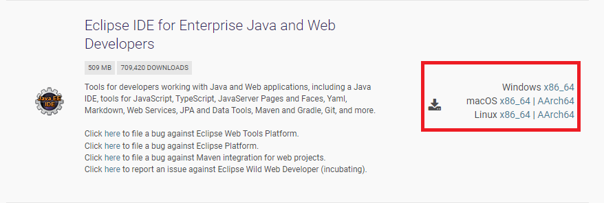
適当なところで圧縮を解凍します。私はd:\eclipseフォルドにインストールしました。
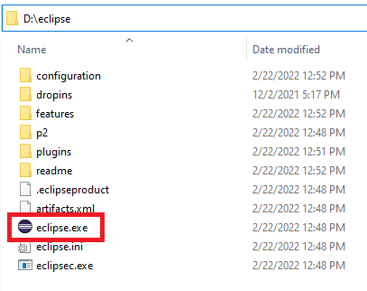
イクリプスを実行してプロジェクト生成ウィザードを実行するとまだ、Spring bootを生成する領域がありません。
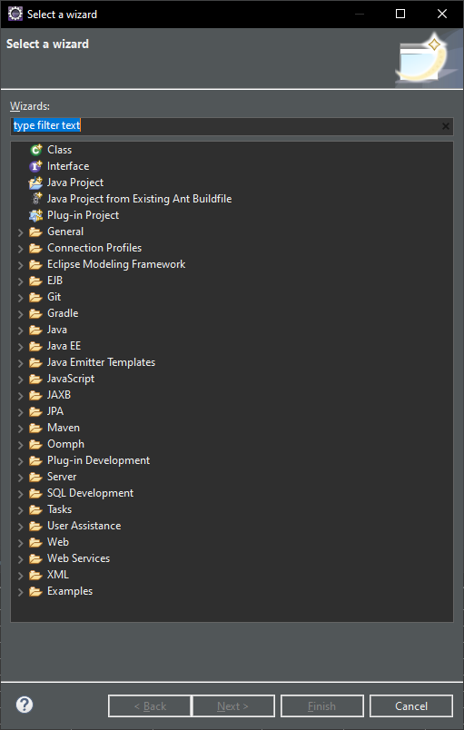
Help -> Eclipse MarketPlaceを選択しましょう。
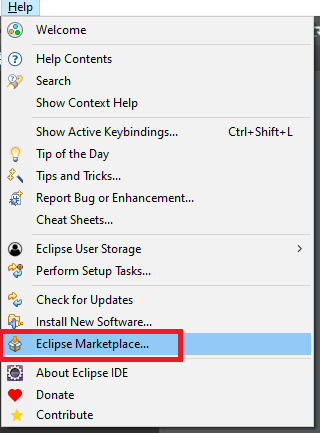
そして検索テキストで「sts」で検索しましょう。
そうしたらSpring tools 4が検索されますが、インストールしましょう。
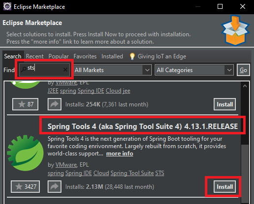
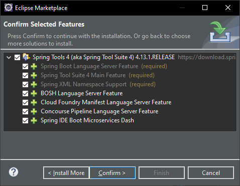
右下のツールバーを見るとインストール状況が見えますが、インストール完了するまで待ちましょう。
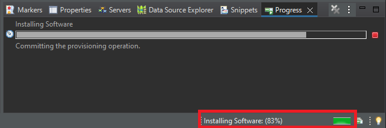
インストール完了するとEclipseが再起動します。
そしてまた、プロジェクト生成ウィザードを開くとSpring bootカテゴリーが生成されたことを確認できます。
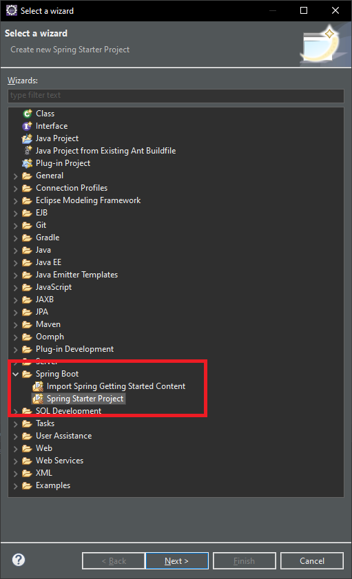
Spring Starter Projectを選択してプロジェクトを生成しましょう。
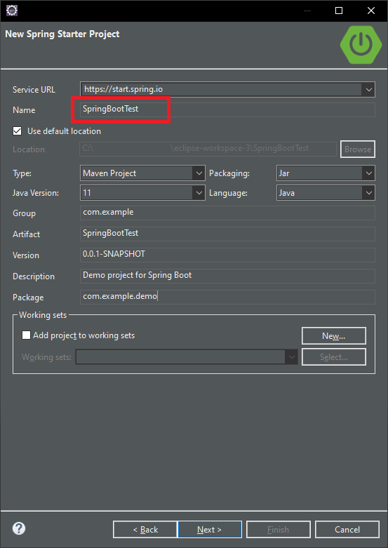
プロジェクト名と基本パッケージ設定、Mavenで使うGroupとバージョン設定をしてNextを押下しましょう。
Spring bootは始めに生成する時に基本Dependenciesを設定することができますが、ウェブ環境ならSpring Boot DevTools、Thymeleaf、Spring Webを設定しましょう。
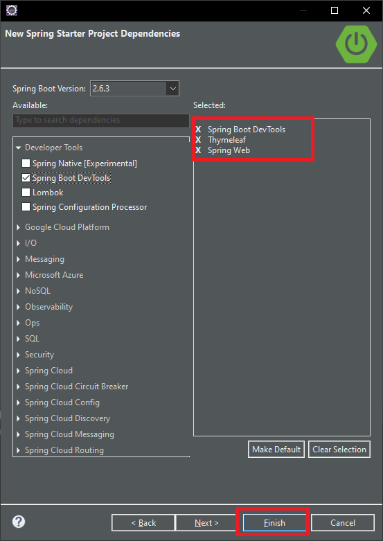
Spring Boot DevToolsは開発する時に良いライブラリだし、Spring WebはWeb Frameworkライブラリです。
DevToolsをチェックしなくても開発することでは問題ないですが、なかればデバッグ中でソース修正するとテンプレートキャッシング設定やトムキャット再起動などの不便なところがあるので設定するほうがよいでしょう。後でリリーズ(Production deploy)する時にpom.xmlから除いたら良いです。
Spring Webは既存おWeb Frameworkです。差異は以前にはxmlでWeb frameworkを設定しなければならないことが多かったんですが、Spring bootからはapplication.propertiesですべての設定が統合されているので設定が楽になりました。
Thymeleafはテンプレートフレームワークです。私はSpring bootを使う前にはJSTL(JSP)をよく使いましたが、Spring boot空はThymeleafテンプレートフレームワークがお勧めですね。
性能に関しては個人的に様々にテストをしましたが、別に差異を感じられませんでした。可読性はJSPよりThymeleafが綺麗な感じでした。でもThymeleafは構造が普通ではないので。。Thymeleafの文法では別に説明します。
最後にFinishを押下してプロジェクトを生成しましょう。
プロジェクトを生成した後に何分を待ってたらプロジェクトが生成されますが、下記通りの構造になります。
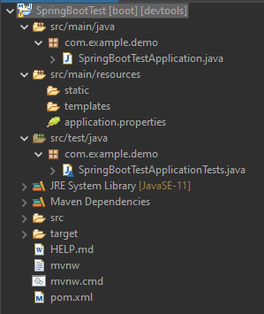
まず、設定する部分がapplication.propertiesです。
# サーバーポート設定
server.port=8081
# thymeleaf ファイル設定
spring.thymeleaf.prefix=classpath:templates/
spring.thymeleaf.check-template-location=true
# thymeleaf ファイル拡張子
spring.thymeleaf.suffix=.html
spring.thymeleaf.mode=HTML5
# thymeleaf キャッシュモード
spring.thymeleaf.cache=false
そして基本的にControllerクラスを生成する時は@SpringBootApplicationアノテーションとmain関数があるクラスと同じパッケージあるいは下位パッケージにControllerを設定することができます。
私は下位パッケージを生成してHomeControllerを生成しました。
package com.example.demo.Controller;
import org.springframework.stereotype.Controller;
import org.springframework.ui.Model;
import org.springframework.web.bind.annotation.RequestMapping;
// コントローラーアノテーション
@Controller
public class HomeController {
// マッピングアドレス
@RequestMapping(value = {"/", "/index.html"})
public String index(Model model) {
// テンプレートに渡すデータ
model.addAttribute("data", "hello world");
// テンプレートファイル名
return "Home/index";
}
}
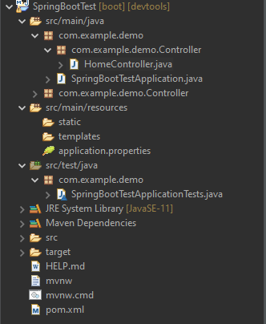
同じパッケージではないところで設定したいなら、@SpringBootApplicationアノテーションにscanBasePackages値を設定したら良いでしょう。
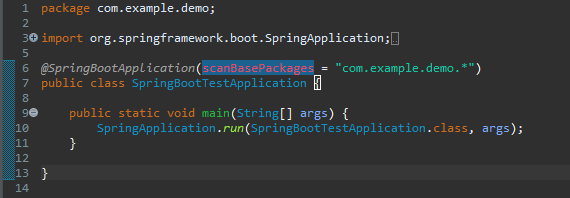
今回はコントローラーに呼び出すThymeleafテンプレートを設定しましょう。
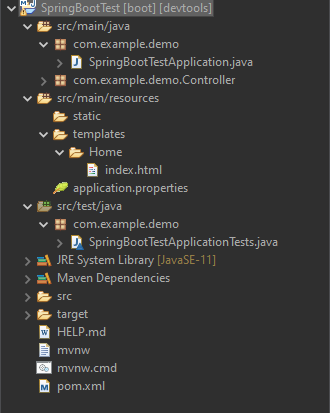
index関数ではHome/indexファイルを呼び出したので、Homeフォルダー下のindex.htmlファイルを生成します。
<!DOCTYPE html>
<html>
<head>
<title>Insert title here</title>
</head>
<body>
<!-- コントローラーで受け取ったデータを出力 -->
<span th:text="${data}">message</span>
</body>
</html>
テンプレートファイルまで生成したらこれから実行しましょう。
実行する方法はProject Explorerのプロジェクトでマウス右クリックするかmain関数があるところでマウス右クリックするとRun asあるいはDebug asのSpring boot Appメニューがありましてクリックすると実行できます。
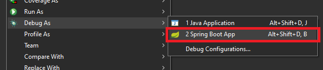
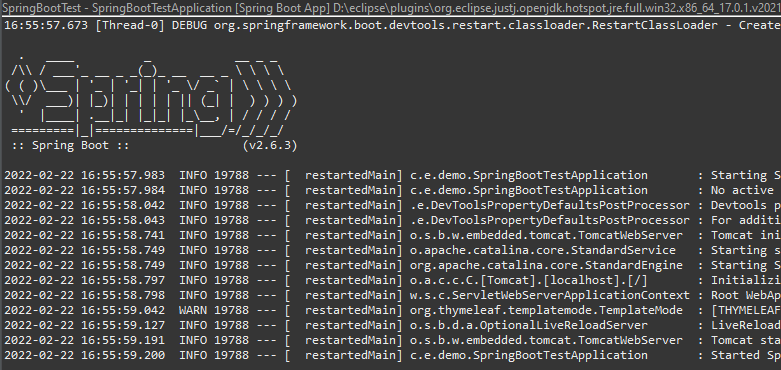
実行すると上のログが発生しますが、application.propertiesで設定したポートに接続すると正常に実行することを確認できます。
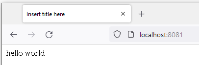
ここまでがSpring bootの基本的の設定です。
これからJPAもWeb Frameworkと設定が違うのでまた、設定をしなければならないですし、Apache連結などもまた確認しなければならないですね。
Thymeleaf文法も整理が必要だし、始めテンプレートウィザードを見ると基本的に支援するライブラリが多いらしいですが、一つ一つ確認しなければならないですね。
ここまでEclipseでSpring bootを設定する方法に関する説明でした。
ご不明なところや間違いところがあればコメントしてください。
- [Java] 59. Spring bootのJPAでEntityManagerを使い方2022/02/25 18:27:48
- [Java] 58. EclipseでSpring bootのJPAを設定する方法2022/02/23 18:11:10
- [Java] 57. EclipseでSpring bootを設定する方法2022/02/22 19:04:49
- [Java] 56. Web serviceのサーブレット(Servlet)で初期化作業(properties設定)2021/07/02 17:10:36
- [Java] 55. Spring frameworkに文字化けを解決する方法(Encoding設定)2021/06/30 16:37:16
- [Java] 54. Spring frameworkでWeb filterを使う方法2021/06/29 18:25:12
- [Java] 53. ウェブサービス(Web service)でエラーページを処理する方法2021/06/25 13:35:54
- [Java] 52. SpringフレームワークでDAOをFactory method Patternを利用して依存性注入する方法2019/10/17 07:15:48
- [Java] 51. SpringフレームワークでJPAを使い方(依存性注入@Autowired)2019/10/16 07:32:55
- [Java] 50. JPAプロジェクトでDAOクラスを作成する方法2019/10/15 20:12:35
- [Java] 59. Spring bootのJPAでEntityManagerを使い方2022/02/25 18:27:48
- [Java] 58. EclipseでSpring bootのJPAを設定する方法2022/02/23 18:11:10
- [Java] 57. EclipseでSpring bootを設定する方法2022/02/22 19:04:49
- [Python] Redisデータベースに接続して使い方2022/02/21 18:23:49
- [Java] Redisデータベースを接続して使い方(Jedisライブラリ)2022/02/16 18:13:17
- [C#] Redisのデータベースを接続して使い方2022/02/15 18:46:09
- [CentOS] Redisデータベースをインストールする方法とコマンドを使い方2022/02/14 18:33:07
- [Design pattern] 3-6. ステートパターン(State pattern)2021/11/17 20:04:47
- [Design pattern] 3-5. メメントパターン(Memento pattern)2021/11/16 20:01:36
- [Design pattern] 3-4. イテレータパターン(Iterator pattern)2021/11/15 19:31:28
- [CentOS] Linux環境(CentOS)でCassandra(NoSQL DB)をインストールする方法(DBeaverブラウザでNoSQL使い方)2021/11/12 17:33:58
- [Design pattern] 3-3. コマンドパターン(Command pattern)2021/11/05 17:01:42
- [Window] apache-tomcatでロードバランシング(Load balancing)する方法とセッションクラスタリング（セッション共有）2021/11/05 16:58:45
- [Window] Apacheでmod_jkとmod_proxyの差異、apacheでtomcatのwebsocketのプロキシフォーワードする方法2021/11/05 16:55:05
- [PHP] Apache環境の同じホスト中でPHPとJava(Servlet)を同時に起動、運用する方法2021/11/05 16:52:04